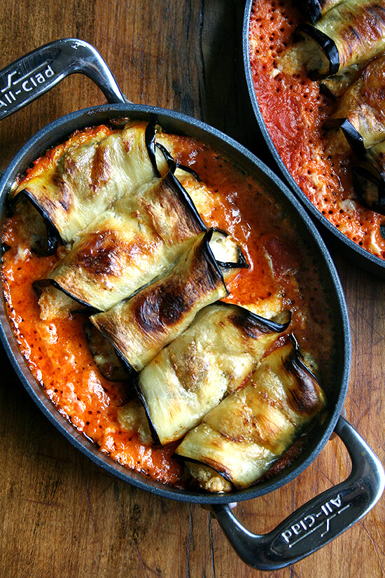

Italian Baked Eggplant
This recipe is from the book "The Student Kitchen".
Ingredients
- 1-2 Eggplants
- 1 tbsp Salt
- 2 tbsps olive oil
- 3 cloves of garlic, crushed
- Pinch of sugar
- 2x 400g of tomatoes
- 2/3 cup red wine
- Pinch of pepper
- 1 tbsp oregano
- 1 cup parmesan cheese
- Mozeralla, thinly sliced
- Handful of fresh basil leaves
Method
- Cut the eggplants into circular slices. Sprinkle with salt and leave in a colondar to drain for 30 minutes
- Meanwhile heat the olive oil in a saucepan over a meduim-high heat. Add the garlic and fry for 1 minute, then add the tomatoes and wine. Bring to the boil and then reduce the heat.
Add sugar, salt and pepper and oregano and stir well. Cook on a gentle simmer for 45 minutes.
- Preheat the oven to 180 degrees and grease an oven dish
- Heat enough oil to cover the base of a large frying pan.
Fry eggplant slices until golden brown on both sides. Drain on paper towl
- Spread a thin layer of tomato saust on the botttom of the baking dish, followed by a layer of eggplant, mozzarella and Parmesan.
Continue to layer like this until the eggplant is used up, finishing with a layer of sauce.
- Transfer to the oven and bake for 30 minutes.
- Remove from the oven and allow to cool slightly and sprinkle with torn basil before serving.

Note that this is not really the same recipe lol
Try out some other reipces!
Chicken Spring Rolls
Spicy Asain Meatballs
Or you can go back to the home page to view all recipes again
Back to Home Page